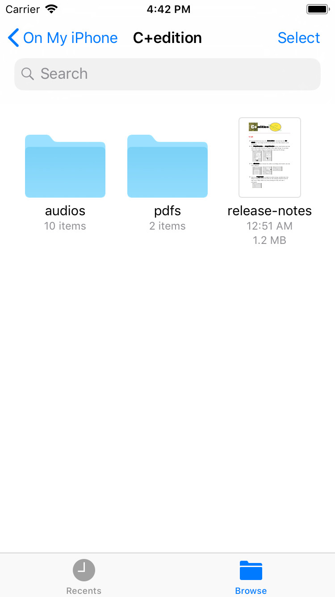
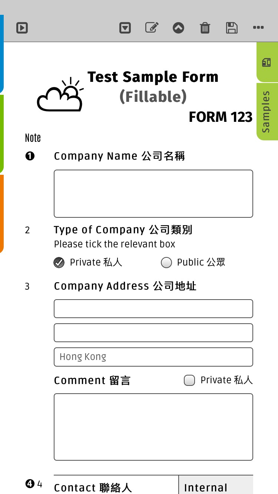
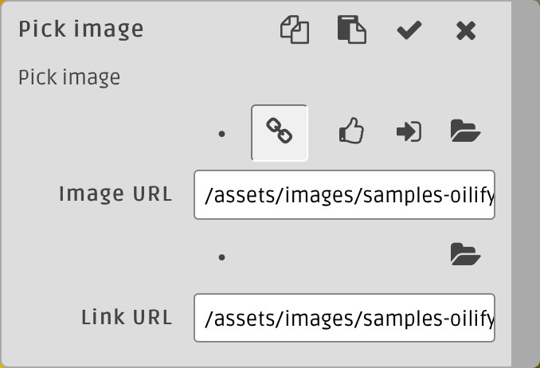

Features
A few miscellaneous features that are not covered in details else where.
The app support audio recording and playback in background. You can start an audio recording using the
Audio
template or the 
Insert Audio
action () in the main context menu. Once started, the recording runs in background. You can browse or edit other document while recording is in progress. Use the icon at top left of the main toolbar to stop the recording. Opening an audio file pop up the Audio Player and plays the audio. You may close the Audio Player using the Close button (). Audio would continue to play in background and there would be an audio playback indicator () at top left of the main toolbar. Click on the indicator opens the Audio Player where you can control the playback again. To stop playing, use the Stop and Close () button. {kind=link}
{kind=link}
{kind=link}
{kind=link}
You may even press the Home or Power button to leave the app or turn the screen off. The recording and playback will continue while the app runs in background.
-
Note that iOS may kill apps running in background when resource or memory is low.
- Note that currently playback only support .m4a, .mp3 and .wav audio files. Recording always create .m4a files.
{kind=link}
{kind=link}
{kind=link}
- Note that currently playback only support .mov, .m4v and .mp4 files. Recording use the iOS default which are .mov files.
- By default, the first frame is used to create the poster for a video. You may customize the poster frame using the poster parameter. For example, /test/video.mp4?view&poster=10000, request poster frame at ~10 sec.
- Note that reading metadata and playback of audio and video file in encrypted location require creating a temporary unencrypted working copy of the file, which takes disk space, CPU time and power. For large files, eg. above 100 MB, that overhead may be quite signficant.
You may not notice that the app added a Dismiss action at the end of the popup Edit menu. On click, it simply dismiss the popup menu.
{kind=link}
The External/ backup directory is available at the iOS Files app as local resource under On My iPhone / iPad. You may copy/move/share files to cloud drives or other apps from there.
Use the
{kind=link}
Use the
Backup
action to create/copy/move backup files to the External/ directory. Use the Import () and Export () action at the {kind=link}
Files
panel to move media files (audio, image, PDF) from/to the External directory.{kind=link}
The app now support most of the form input elements. However input[type=submit] and input[type=file] are noops. In addition, features other than basic text input, eg. menu, contextmenu, ... etc, are not supported. Instead of submitting a form, you simply edit and save a copy of the form with the filled form data.
{kind=link}
-
Note that you can fill in a form in browsing mode, but you have to edit and save the form in order to persists or print the filled form data.
Most template background image and image created by built in actions like take photo, create an image holder (with the x-imageholder class). Click on such image in edit mode would shows a dialog to edit the image URL and the wrapper link URL, making it a lot easier to replace the image with one of your own.
{kind=link}
Restore data with alien keys
{kind=link}
Data backups are protected by a set of random keys that the app generated randomly on first login. The keys are unique on each generation. However, instead of generating a new set of keys, you may import the masters keys from a keys backup file instead, after installation or factory reset. That is the easiest way to share documents among multiple instances of the app.
However, the app do allow restoring data backup that is created with another set of keys. The Restore With Alien Key () action prompt for a keys backup file that contains the keys used to create the data backup file. It use the provided keys to decrypt the data backup and re-encrypt the data using its own master keys, if necessary, before writing it to the /Restore directory.
However, the app do allow restoring data backup that is created with another set of keys. The Restore With Alien Key () action prompt for a keys backup file that contains the keys used to create the data backup file. It use the provided keys to decrypt the data backup and re-encrypt the data using its own master keys, if necessary, before writing it to the /Restore directory.
- You may use this feature to switch to a new set of master keys if you want to. But make sure you keep the old keys backup file around in case you need to read the old data backups.
{kind=link}
{kind=link}
{kind=link}